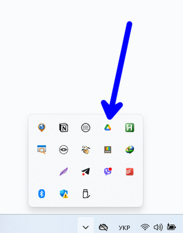
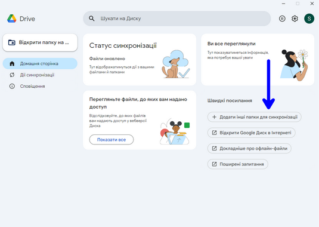

2
Початкове налаштування Google Drive
Крок 2.1: Вхід в акаунт Google
- Введіть електронну пошту Gmail
- Введіть пароль від акаунта Google
- При двофакторній автентифікації введіть код
Крок 2.2: Вибір папки для синхронізації
 - У вікні вибору папки оберіть робочий стіл
- Шлях: C:\Users\[Ваше ім'я]\Desktop
- Натисніть "Вибір папки"
Порада: Точний шлях може відрізнятися залежно від мови Windows
Крок 2.3: Налаштування параметрів синхронізації

- ✅ Синхронізувати з Google Drive (Обов'язково відмітити)
- ☐ Автозавантаження в Google Фото (За бажанням)
- Натисніть синю кнопку "Готово"
Увага: При відмітці Google Фото всі зображення будуть завантажені в хмару